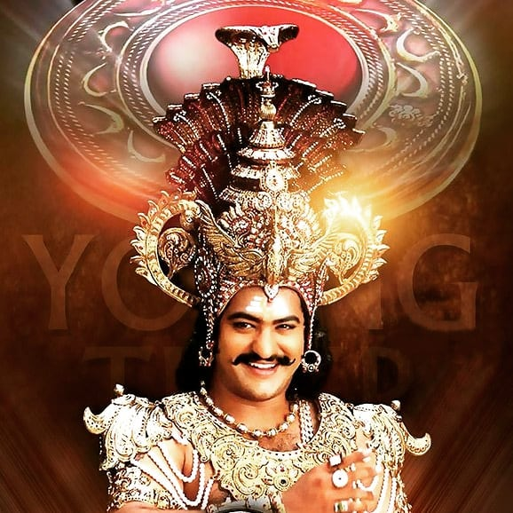
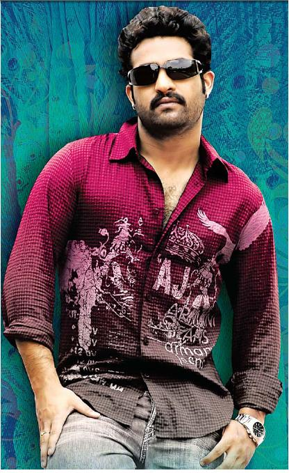
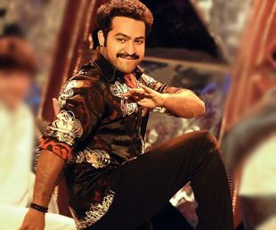
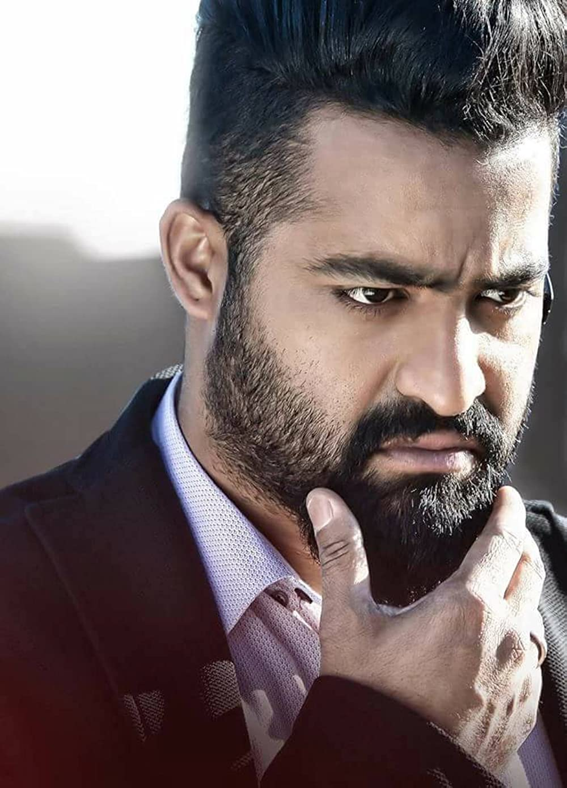

Rama Rao made his debut in the film Brahmarshi Vishwamitra (1991) as a child artiste at the age of seven. Written and directed by his grandfather N. T. Rama Rao, he played the role of Bharata. After a long gap, he then played the titular role of Rama in the Gunasekhar-directed mythological film Ramayanam (1997), which won the National Film Award for Best Children's Film.His performance in the film received critical appreciation. Director K. Raghavendra Rao recommended Rama Rao to [S. S. Rajamouli]] for his directorial debut Student No. 1 (2001) during mid-2000 after being impressed with his performance in the auditions and his previous film Ramayanam, however, the film went under production for too long. He was later signed by producer Ramoji Rao, and decided to work on the romantic drama Ninnu Choodalani which marked his debut as a lead actor. By that time, he was only 17.Student No. 1, which released later, went onto be successful while Subbu (2001) was a commercial failure. In Aadi (2002) directed by debutant V. V. Vinayak, he played a man is trying to take revenge on a landlord for the death of his parents. The film was one of the highest-grossers of 2002.[16] He went to appear in other films such as B. Gopal's Allari Ramudu (2002) and A. M. Rathnam's political thriller Naaga (2003). Simhadri (2003), his second collaboration with Rajamouli, on a budget of ₹8.5 crore, the film ended up becoming the highest-grossing Telugu film in history at the time. He sported a new look, in order to get rid of the youth one, and grew a light beard. giving him the title of Young Tiger. He later quit youth films and started experimenting with faction dramas. He next appeared in Puri Jagannadh's action drama Andhrawala (2004) created much hype but was a box office failure.[15] He then starred in action film, Samba (2004) in his second collaboration with Vinayak. Later on he played a dual role in family drama film Naa Alludu (2005) and starred in Gopal's Narasimhudu (2005) and Surender Reddy's Ashok. All the three films failed at the box office.[19] His performance in Krishna Vamsi's Rakhi (2006) is considered to be one of his finest.
 Rama Rao collaborated with director Rajamouli for the third time for a socio-fantasy film Yamadonga. For this film, he had to sport a new look by shedding more than 20 kg, as he used to be 94 kg. RamaRao played Raja, a thief who later criticizes and insults Yama and then suddenly goes into hell due to some bad acts. The film received positive reviews and made him receive Filmfare Award for Best Actor – Telugu. Actor Mohan Babu praised Rama Rao's performance in the film. Rama Rao later signed up for the action film Kantri which was directed by debutant Meher Ramesh, a protege of Puri Jagannadh. In 2009, Rama Rao took a year hiatus to campaign for Telugu Desam Party (TDP) in the 2009 general elections. Rama Rao signed up for the action-comedy Adhurs, in which he played dual roles for the third time after Andhrawala, and Naa Alludu. Adhurs grossed more than ₹300 million.He then returned to romantic films after several years in the romantic comedy Brindavanam (2011), directed by Vamsi Paidipally. Rama Rao collaborated with director Ramesh for the fantasy action film Shakti, and with director Surender Reddy for the romantic action film Oosaravelli.The Boyapati Srinu-directed Dammu (2012) become an average grosser.
 Jr NTR with actor Rajendra Prasad at Nannaku Prematho promotional event In Baadshah, he sported a new look by straightening his curly hair and growing a beard, in order to suit the don image. The film became a sleeper hit. Baadshah's final figures was over ₹480 million in 50 days. This film was later dubbed into Hindi and Malayalam.[28] Rama Rao's next release of 2013, was the revenge drama Ramayya Vasthavayya, directed by Harish Shankar. This was the worst period in Rama Rao's career and Baadshah was the only film that gave him success. Baadshah was premiered at the Osaka Asian Film Festival 2014 held in Japan. In 2015, he starred in Temper directed by director Puri Jagannadh. The film gave a much-needed success for Rama Rao, after a series of debacles and his performance as a corrupted cop Daya who turns a good doer was appreciated by audience and critics alike.[citation needed] Following the success of Temper, Rama Rao worked in Nannaku Prematho (2016) directed by Sukumar under the production of Sri Venkateswara Cine Chitra and Reliance Entertainment. He has second Filmfare Award for Best Actor – Telugu for his performance.NTR sported a new look with gelled up hair and long beard for the film received positive reviews from critics and audience.[citation needed] The movie eventually turned out to be the highest grosser in Rama Rao's career surpassing Baadshah with a worldwide gross of ₹82.7 crore (US$10 million).Later in the same year, Rama Rao starred in the September release Janatha Garage, directed by Koratala Siva, where he was cast alongside the Malayalam actor Mohanlal.The film registered the highest opening for a Tollywood film in 2016, and was the second highest Tollywood opening of all time, behind Baahubali: The Beginning.[citation needed] and became the highest grossing Telugu film of the year. In 2017, Rama Rao essayed a triple role in Jai Lava Kusa under the direction of K. S. Ravindra on N.T.R. Arts banner with his half-brother Nandamuri Kalyan Ram as the producer.Jai Lava Kusa collected almost ₹130.90 crore worldwide and was successful at the box office with critics praising his triple role performance. In 2018, he starred in Trivikram Srinivas-directed action drama Aravinda Sametha which went become one of the highest-grossing Tollywood films of the year.Trivikram Srivinas credited Rama Rao for success of Aravinda Sametha. He said, “a highly-capable actor like NTR is very rare to find in any generation. When it comes to acting, He is like a torchbearer. Staying in the moment is a very great quality. He is such a rare Actor. NTR has the capability to match his Grandfather. He is disciplined, honest, straight-forward, doesn't get involved in unnecessary issues and goes to any extent to achieve what is necessary. We needn't have to stop such a personality, just need to offer claps during his journey”.S. S. Rajamouli's magnum opus RRR, where Rama Rao playing 20th century freedom fighter Komaram Bheem, opened to massive success.Rajamouli said, “I would really say there is no other actor on the Indian screen who can do what Tarak did in Komaram Bheemudo song. Showing pain, showing betrayal, showing subjugation to the motherland, but not even batting an eyelid at the oppressor. Not just showing all these emotions, but showing all these emotions in one shot, in one frame. That is like an epic.”